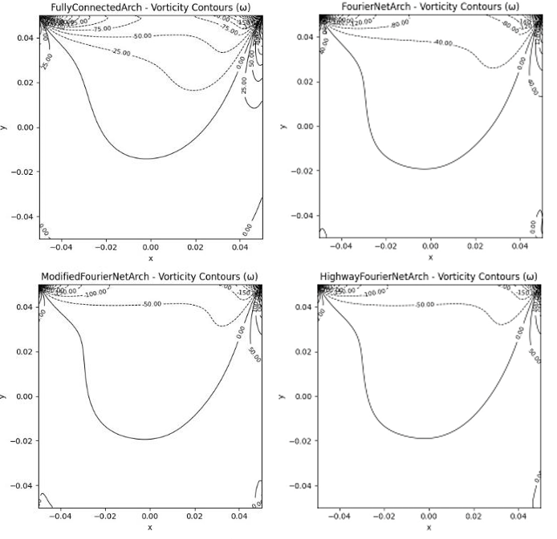
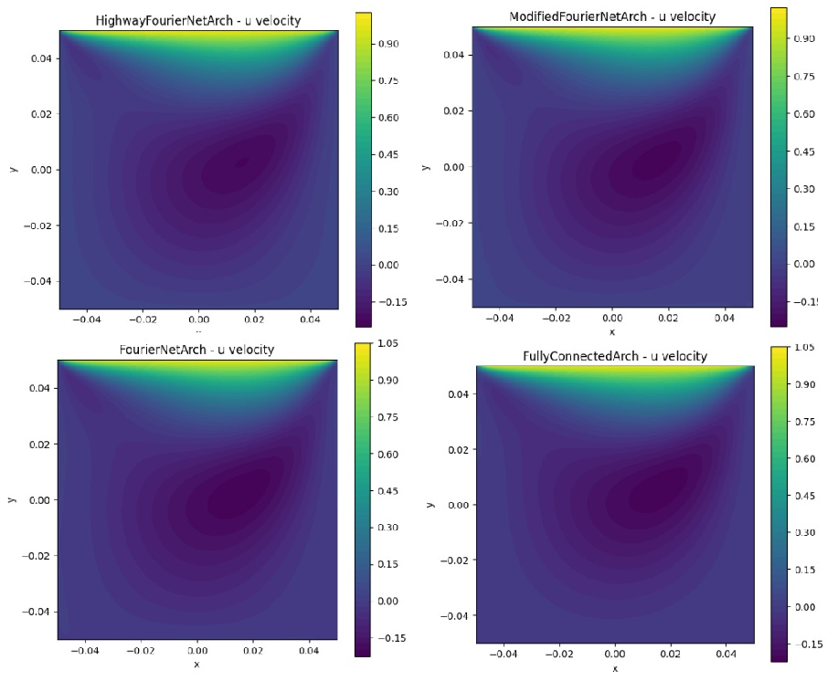

Physics-Informed Neural Networks (PINNs)
Mesh-Free Solvers for Navier–Stokes Equations
Research Overview
This research investigates the use of Physics-Informed Neural Networks (PINNs) as mesh-free, data-efficient solvers for incompressible Navier–Stokes equations, validated on the classical lid-driven cavity benchmark. The work was implemented using NVIDIA PhysicsNeMo and accepted for presentation at the 12th International and 52nd National Conference on Fluid Mechanics and Fluid Power (FMFP-2025).
Objective
- Develop a PINN-based solver capable of reproducing canonical Navier–Stokes benchmark flows without numerical meshing.
- Compare multiple network architectures (FCN, Fourier-based, Highway variants) for resolving vortical structures and velocity fields.
- Evaluate the influence of model depth, architecture, and optimizers on accuracy and convergence.
- Assess scalability of Fourier-enhanced PINNs for use as surrogates to conventional CFD.
Problem Studied
- Lid-driven cavity flow
Research Summary
The study implements continuity and momentum conservation directly into the loss function, eliminating the need for discretized meshes or large datasets. The lid-driven cavity flow simple in geometry but rich in vortical dynamics serves as an ideal benchmark to evaluate PINN performance and stability.
Multiple architectures were tested, including Fully Connected Networks (FCNs), FourierNet, Modified FourierNet, and Highway FourierNet. FCNs displayed low-frequency bias, while Fourier-based networks captured sharper gradients and near-wall features more effectively. Modified FourierNet achieved the best stability–accuracy balance.
Network depth was varied across shallow to deep configurations, revealing underfitting at low depth and training instability at excessive depth. An intermediate architecture offered the most reliable performance. Training was conducted across progressively increasing maximum step counts, demonstrating that beyond a certain threshold the accuracy improvement becomes marginal, though finer flow features continue to improve with extended training.
Several optimizers SGD, Adam, AdamW, and Ranger were evaluated. AdamW consistently showed smoother convergence and higher final accuracy. The final configuration combining Modified FourierNet, mid-range depth, and AdamW produced velocity fields and vortex structures that closely matched classical benchmark profiles.
Extended Work (Current Research)
Building on this foundation, I am extending PINNs toward complex multiphase flow problems involving phase interfaces, density contrasts, and interfacial dynamics as part of my research internship at IIT Bombay under Prof. Atul Sharma. This work focuses on learning interface evolution, velocity–pressure coupling across phases, and surface-tension-driven phenomena within a physics-informed framework. The objective is to evaluate whether physics-informed learning can reliably model multiphase systems such as bubble dynamics, droplet transport, and stratified flows while reducing reliance on expensive mesh-based solvers.
Gallery

